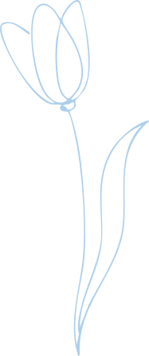

Cette page regroupe mes créations graphiques réalisées dans différents contextes : projets universitaires, stages, et productions personnelles. Chaque projet reflète une approche soignée de l'identité visuelle et de la mise en page. Les visuels sont à ajouter directement dans les dossiers correspondants.
Flyer
1 dépliantDurant mon stage chez Sandro Matera, j'ai eu la belle opportunité de concevoir entièrement un flyer pour la Maison des Adolescents du Haut-Rhin. J'ai dû entièrement gérer, planifier et réaliser ce projet en prenant rendez-vous avec le client, et en effectuant des échanges réguliers avec celui-ci. J'ai dû chercher à rendre le flyer moderne, attractif, et dynamique tout en me soumettant aux diverses contraintes et demandes du client. En voici le résultat final :
Logo
1 LogoDans le cadre d'un projet universitaire, j'ai dû imaginer la refonte d'un vieux bâtiment abandonné à Guebwiller. J'ai pensé alors redonner vie à ce bâtiment en le transformant en café floral. Par la suite, j'ai dû trouver un nom pour cet établissement, lui créer un logo, et constituer tout un dossier de recherche graphique. Je vous présente alors le résultat de ce dossier de recherche avec le logo de Coffea, ainsi que ses déclinaisons sur divers supports.

Moodboard
3 documentsLors de mon stage chez Sandro Matera, j'ai été amenée à effectuer de nombreux Moodboards pour soumettre diverses idées d'ambiances à divers clients selon les projets. J'ai été amenée à proposer des ambiances pour la carte du restaurant L'Imprimerie, pour le magazine Résoado de la Maison des Adolescents du Haut-Rhin, et pour un certificat de diplôme de Skando.


Motifs
Musée d'impression sur Étoffe


Affiche
2 afficheEt voici pour finir quelques affiches que j'ai pu réaliser au cours de ma formation en BUT MMI. Entre affiche tout aussi mystique qu'extravagante pour le Festival fictif de musique Fantastika, et affiche épurée et monochrome pour une fausse diffusion du film en stop-motion Fantastic Mr. Fox, ces créations mettent en avant deux approches graphiques aux ambiances totalement opposées.


{kind=link}